-
Исходные файлы размещены в архиве iNOPC.zip. Их необходимо распаковать, путь распаковки не имеет
значения.
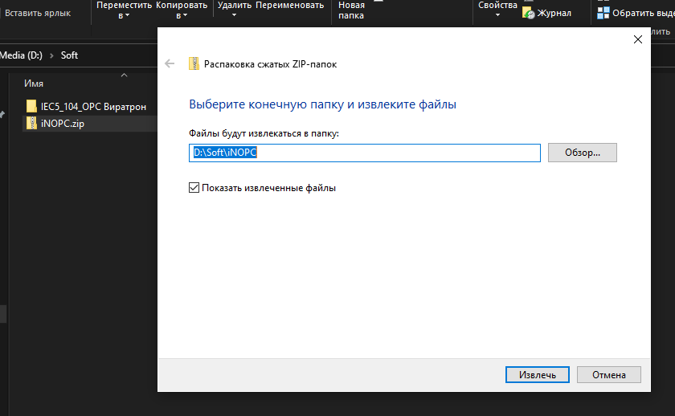
-
После распаковки производим первый запуск сервера. Для этого запускаем исполняемый файл
iNOPC_Server.exe в папке с распакованным архивом.
Внимание, для правильной настройки первый запуск нужно выполнить с правами администратора.
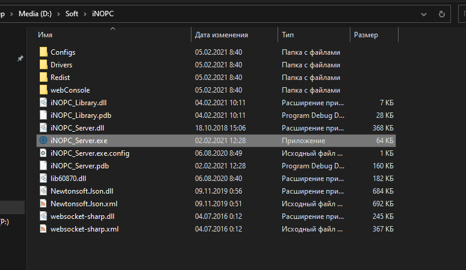
-
После запуска должно появиться консольное окно.
Если его нет, проверьте наличие на сервере установленных пакетов:
-
.NET Framework 4.5 - либо иная версия, совместимая с этой
-
OPC Core Components 3.00 - либо более поздняя версия
Исталляционные пакеты можно найти в папке Redist
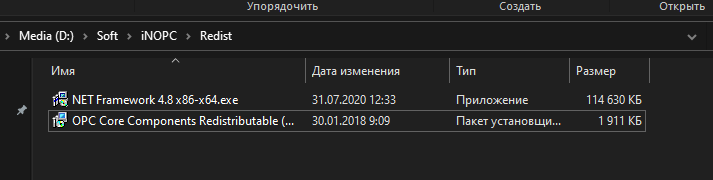
После доустановки необходимых компонентов снова пробуем запустить сервер
-
При запуске сервера в оконном режиме запускается консольное окно сервера с ссылкой на веб-консоль.
Конфигурирование и управление сервера проводится через неё
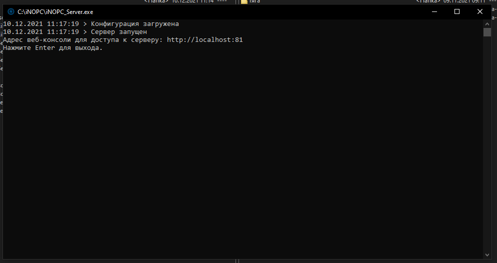
-
После того, как сервер запущен, дальнейшая работа ведется в веб-интерфейсе.
Для того, чтобы туда попасть, набираем в браузере http://localhost:81. Если сервер в работе, а доступа к
веб-консоли нет, убедитесь, что в вашей сети открыт TCP порт 81
-
Первый запуск веб-консоли просит ввести пароль для первой учётной записи. Без создания учётной записи
получить доступ к серверу не удастся. Первая учётная запись будет обладать полными правами доступа.
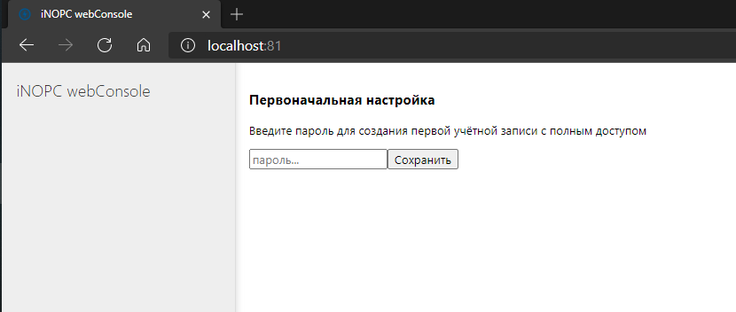
-
Установка завершена, сервер готов к работе.
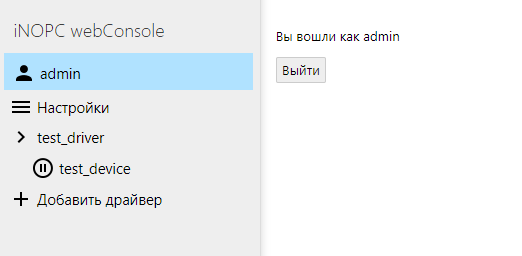
Для смены учётной записи необходимо нажать на Выход, а затем произвести вход с необходимыми учётными
записями. Разные учётные записи могут иметь разные уровни доступа к просмотру данных и настройке сервера.
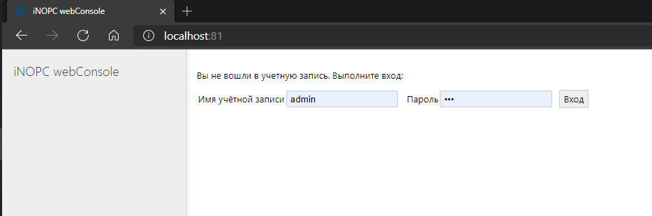
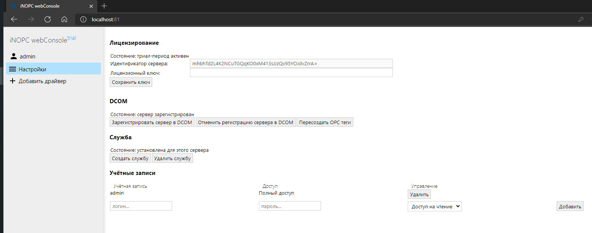
На этой странице можно произвести повторную инициализацию DCOM, выполнить обновление данных в тегах OPC
сервера, а также управлять учётными записями.
Для добавления новой учётной записи необходимо ввести логин, пароль и указать уровень доступа, а затем нажать
Добавить
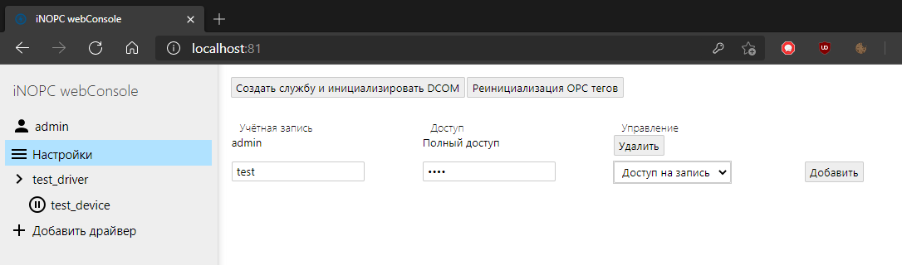
Для удаления существующей учётной записи нажмите Удалить
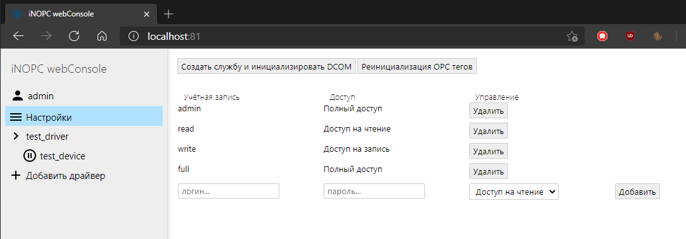
Доступны следующие права доступа:
-
доступ на чтение – позволяет просматривать данные, получаемые с устройств
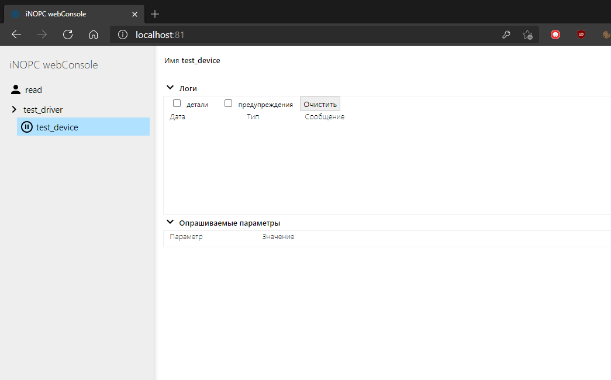
-
доступ на запись – позволяет не только просматривать данные, но также и выполнять настройку
драйверов и устройств
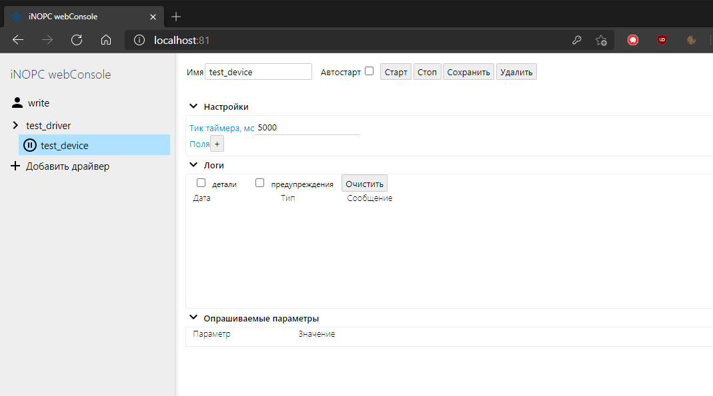
-
полный доступ – дополнительно позволяет управлять учётными записями
Внимание, если удалить все учетные записи с полным доступ, контроль над сервером будет утерян, и
потребуется переустановка.
iNOPC распространяется по модели Shareware с триал-периодом в 4 часа после запуска, в течении
которых доступен весь функционал.
По завершении триал-периода работа OPC сервера останавливается.
Для отключения триал-периода нужно отправить распространителю идентификатор сервера, указанный на странице
Настройки в веб-консоли, после чего тот присылает ключ лицензии.
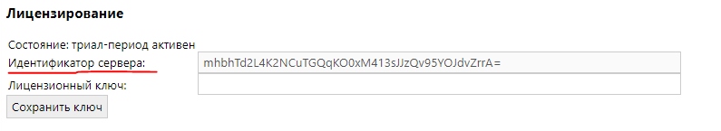
После сохранения ключа сервер может работать в постоянном режиме.
Работа с OPC сервером предполагает использование его как службы Windows. Оконный режим запуска даёт доступ к
веб-консоли для настройки и регистрации службы, и не гарантирует доступ по OPC протоколу.
Чтобы зарегистрировать службу, на странице Настройки в веб-консоли нужно нажать кнопку Создать
службу
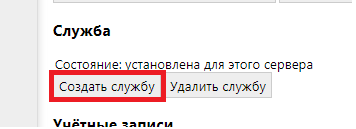
После создания службы – закрыть окно сервера и запустить службу через оснастку Windows.

Для доступа к данным по протоколу OPC необходимо выполнить регистрацию в службе DCOM. Для этого есть кнопка
на странице Настройки в веб-консоли.

Отмена регистрации нужна для ситуации, когда сервер обновлялся либо переносился в другое расположение.
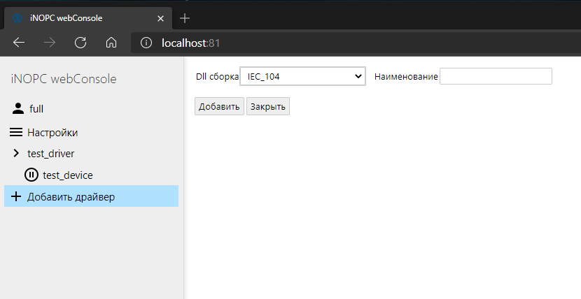
Это окно не доступно при уровне доступа Доступ на чтение
В этом окне можно добавить новый драйвер для последующего добавления группы устройств этого типа. На тип
устройств влияет указанная в драйвере DLL сборка.
Структура OPC составляется следующим образом:
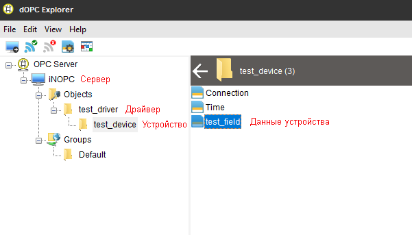
Внимание, для корректной работы с OPC тегами имена драйверов, устройств и полей желательно указывать
на латинице без спецсимволов и пробелов.
После добавления драйвера будет выполнено перенаправление на окно управления драйвером.
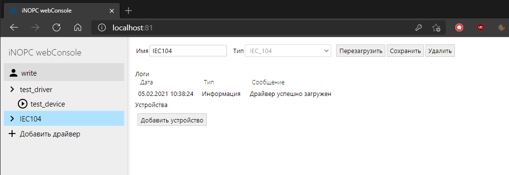
В этом окне доступны операции переименования драйвера, обновления устройств в случае замены версии DLL сборки
– Перезагрузить, и удаления драйвера.
Также можно просматривать служебные сообщения драйвера в окне Логи и список использующих этот драйвер
устройств в окне Устройства.
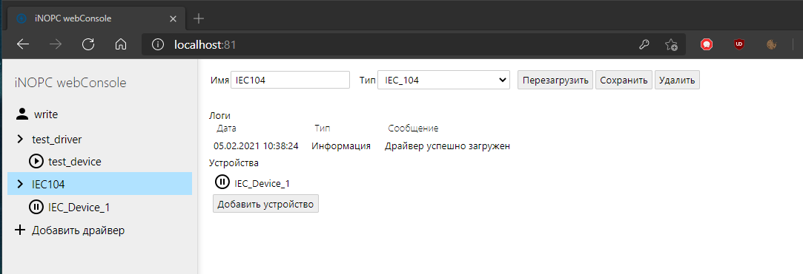
Для добавления нового устройства служит кнопка Добавить устройство. После нажатия будет создана
страница устройства с случайным именем и настройками по умолчанию для этого типа устройств.
При клике на имя устройства будет выполнено перенаправление на окно управления устройством.
При клике на пиктограмму перед именем устройства получение данных с этого устройства будет запущено либо
изменено.
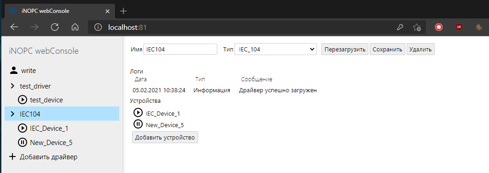
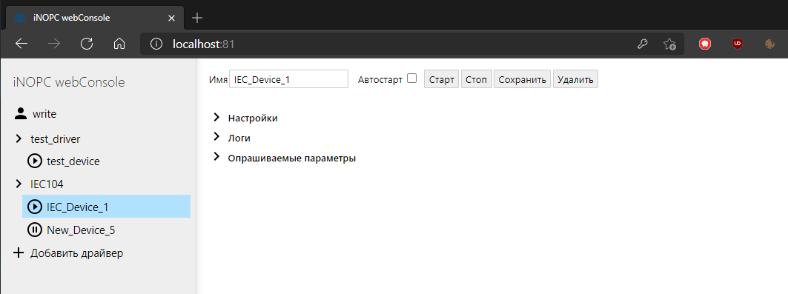
В этом окне можно просматривать переименовать устройство, задать для него автоматический запуск опроса после
старта сервера, выполнить запуск либо остановку опроса, а также удалить данное устройство.
Также доступны несколько вкладок: получаемые с устройства данные во вкладке Опрашиваемые параметры, служебные
сообщения о работе устройства во вкладке Логи и настройки устройства во вкладке Настройки.
Изменение имени устройства и настройки сохраняются после клика по кнопке Сохранить
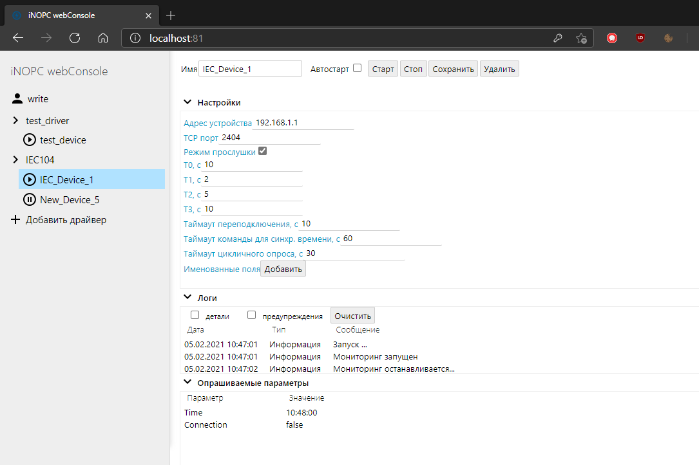
Настройки устройства специфичны для каждого из драйверов. Справка по настройкам конкретных типов устройств
будет добавлена в веб-клиент начиная со следующей версии.
Поля с данными, получаемыми устройством, после запуска опроса становятся доступны в OPC дереве сервера.
Вычисляемые теги - теги, которые создаются вручную и имеют произвольную формулу, по которой с заданным промежутком вычисляется следующее значение.
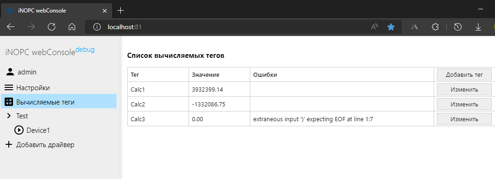
На странице со списком вычисляемых тегов доступен просмотр текущих значений каждого тега, а так же просмотр информации о каждом теге в случае, если учетной записи представлен доступ на чтение, либо добавление нового либо изменение существующих - в случае доступа на запись либо администраторского.
Так же в случае ошибок расчёта причина ошибки будет выведена в отдельное поле.
Окно настройки вычисляемого тега
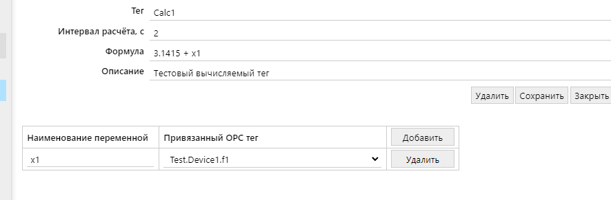
Доступно переименование, изменение интервала расчёта, возможность указать произвольное описание тега
Формула пишется как математическое выражение на латинице без знака тождества. Доступны стандартные математические операторы, а так же список встроенных функций.
| Функция |
Описание |
Пример использв. |
Результат |
| Abs |
Возвращает значение числа по модулю |
Abs(-1) |
1 |
| Acos |
Возвращает угол, косинус которого равен указанному числу. |
Acos(1) |
0 |
| Asin |
Возвращает угол, синус которого равен указанному числу. |
Asin(0) |
0 |
| Atan |
Возвращает угол, тангенс которого равен указанному числу. |
Atan(0) |
0 |
| Ceiling |
Возвращает наименьшее целое число, большее или равное указанному числу. |
Ceiling(1.5) |
2 |
| Cos |
Возвращает косинус указанного угла. |
Cos(0) |
1 |
| Exp |
Возвращает e, возведенное в указанную степень. |
Exp(0) |
1 |
| Floor |
Возвращает наибольшее целое число, меньшее или равное указанному числу. |
Floor(1.5) |
1 |
| IEEERemainder |
Возвращает остаток от деления указанного числа на другое указанное число. |
IEEERemainder(3, 2) |
-1 |
| Log |
Возвращает логарифм указанного числа. Второй параметр - основание логарифма. |
Log(1, 10) |
0 |
| Log10 |
Возвращает логарифм указанного числа по основанию 10. |
Log10(1) |
0 |
| Max |
Возвращает большее из двух указанных чисел. |
Max(1, 2) |
2 |
| Min |
Возвращает меньшее из двух чисел. |
Min(1, 2) |
1 |
| Pow |
Возвращает указанное число, возведенное в указанную степень. |
Pow(3, 2) |
9 |
| Round |
Округляет значение до ближайшего целого числа или заданного количества знаков после запятой. |
Round(3.222, 2) |
3.22 |
| Sign |
Возвращает значение, указывающее знак числа. |
Sign(-10) |
-1 |
| Sin |
Возвращает синус указанного угла. |
Sin(0) |
0 |
| Sqrt |
Возвращает квадратный корень из указанного числа. |
Sqrt(4) |
2 |
| Tan |
Возвращает тангенс указанного угла. |
Tan(0) |
0 |
| Truncate |
Вычисляет целую часть числа. |
Truncate(1.7) |
1 |
| in |
Возвращает булевское значение, указывающее на то, находится ли элемент, переданный в функцию первым, в наборе значений среди остальных переданных в функцию значений. |
in(1 + 1, 1, 2, 3) |
true |
| if |
Возвращает значение на основе условия. Первый аргумент - условие, второй - значение в случае истинности условия, третий - значение в случае ложности условия. |
if(3 % 2 = 1, 'правда', 'ложь') |
'правда' |
Переменные - способ использовать значения других тегов сервера в формулах в удобном формате. В качестве переменных можно использовать и теги, данные для которых предоставляют другие устройства, и другие вычисляемые.
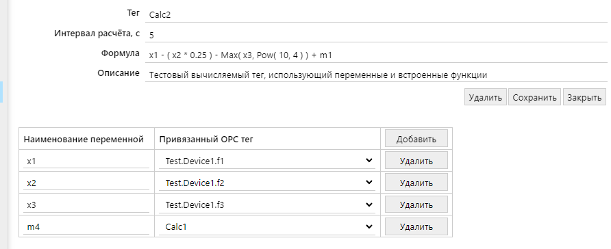
В случае синтаксической ошибки значение тега будет приравнено к нулю. Аналогично при ошибке вычисления. Если переменная имеет строковый тип, а используется как число, значение переменной будет приравнено к нулю. При этом доступны строковые операции, а так же строковый вывод в случае использования условных конструкций.
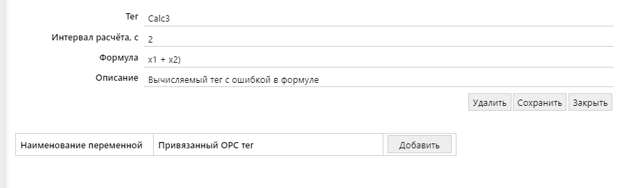
Для тегов, при вычислении или описании которых есть ошибки, качество в OPC сервере будет равно 0.
По умолчанию вычисляемые теги не привязываются к какому-либо разделу в дереве OPC тегов и располагаются в корне.
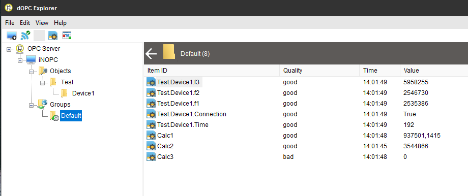
Имена вычисляемых тегов можно давать произвольные, и в таком случае они будут располагаться в дереве OPC согласно нотации через разделители .
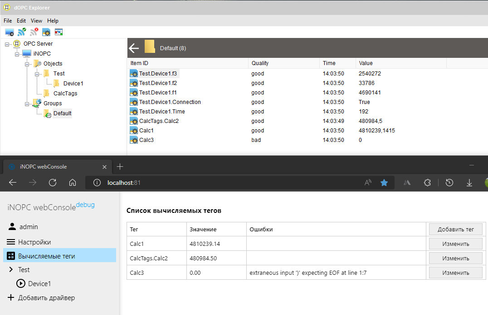
Для стабильной работы рекомендуется в названиях вычисляемых тегов следовать правилам именования OPC тегов: